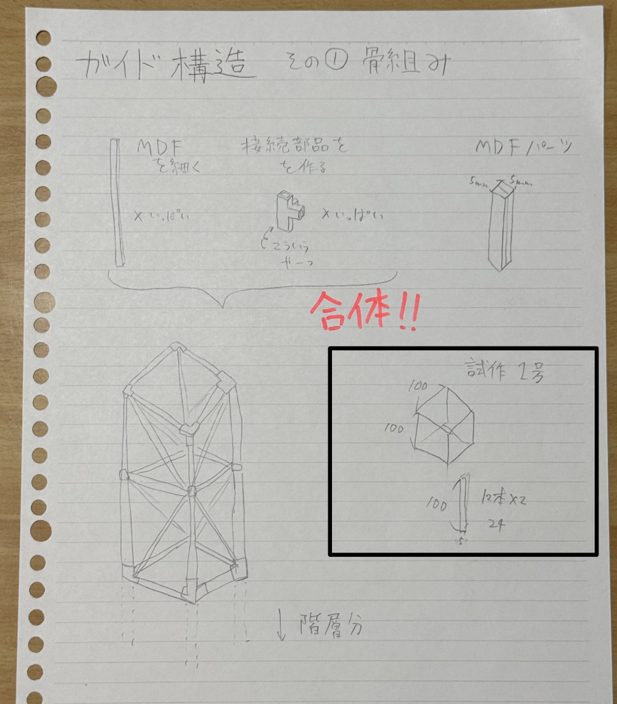
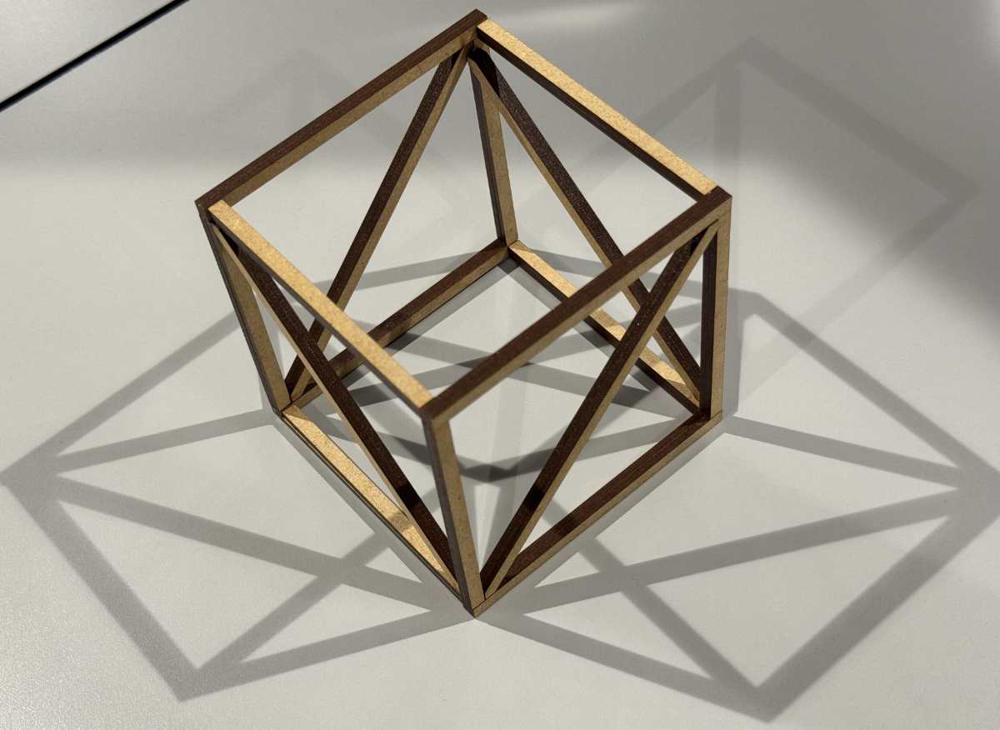

プロジェクトノート
〜スケッチ〜

〜概要〜
・今回は、Nickとともに『ミニエレベーター』を制作していくことにした。
話し合いの初段階では、押し心地のいいボタンを作る予定だったが、何か面白い機能をつけたいということに...そこから派生して、「エレベーターを作れば面白そう」ということで意見が纏まった。
〜プロセスメモ〜
・ー制作にあたって必要なもの（６月１日現時点）ー
01.本体素材（まだ未決定）
02.操作盤素材（スイッチボード的なやつ）
03.ステッピングモーター
04.サーボモーター
05.ブレッドボード
06.タクトスイッチ
07.LED
08.スピーカー
09.スポンジまたはバネ（スイッチの緩衝材として）
・ー構想ー
６月１日時点での構想↓

「■は考えないといけないこと、疑問等●は具体的にやること、→はやったこと」
■:"どこまで『エレベーター』として再現するか。" "強度はどうするか。" "外枠は何で作るのか...それともDCM等の完成品で代用するのか。"
●:"本体サイズの決定" "エレベーターにIOTを取り入れる"
→:"外枠の試作"
外枠のスケッチ↓

↑現時点での外枠スケッチ。
これをもとにとりあえず試作品を作ることにした。
最初、３Dモデリングで接続部のパーツを作ったが、授業時間を大幅にオーバーしてしまうことが発覚し、MDFで簡易的なものを作ることに...
それがこちら↓

これを制作した上で、さまざまな課題が見えた。
MDFに瞬間接着剤を塗って固定しようとしたが、なかなか接着できず強度が足りないことがわかった。
また、サイズも小さかったためNickと話し合って調整しなければいけない。
次回は具体的なサイズと素材について話し合い、IOTをどのようにして取り入れるのかを考える。（回数に応じてBGMを流すという案は出たが、まだ未定。）